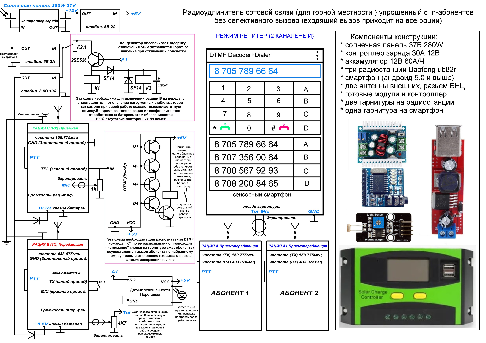
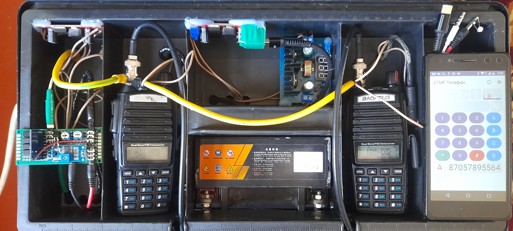
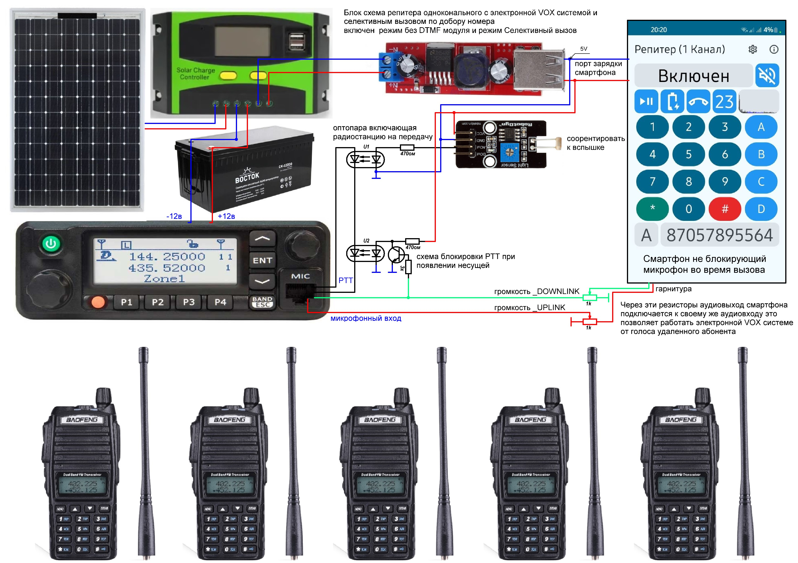
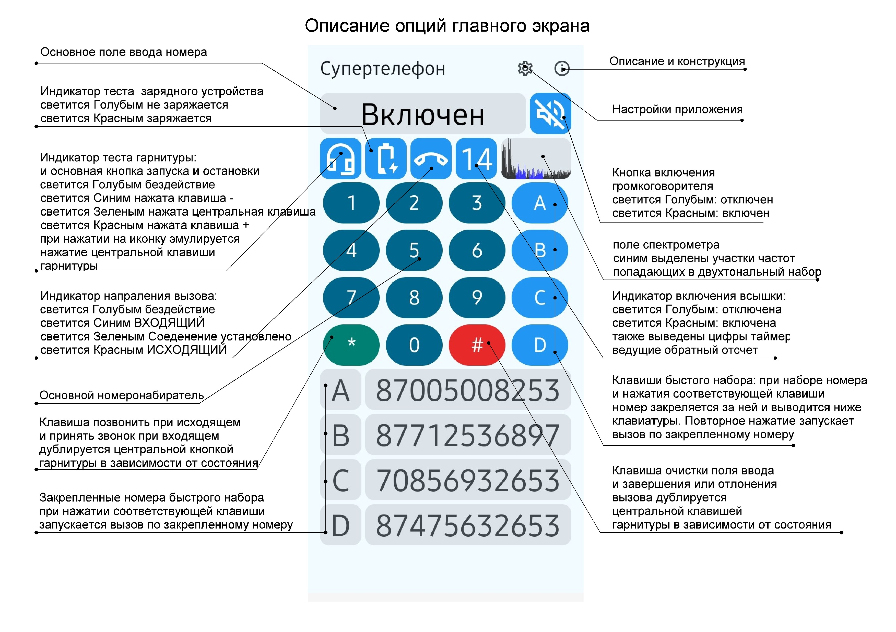
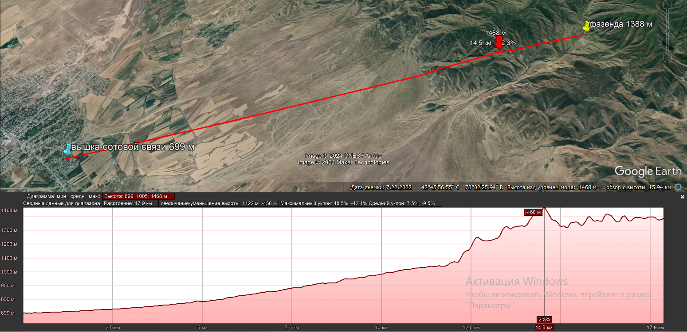
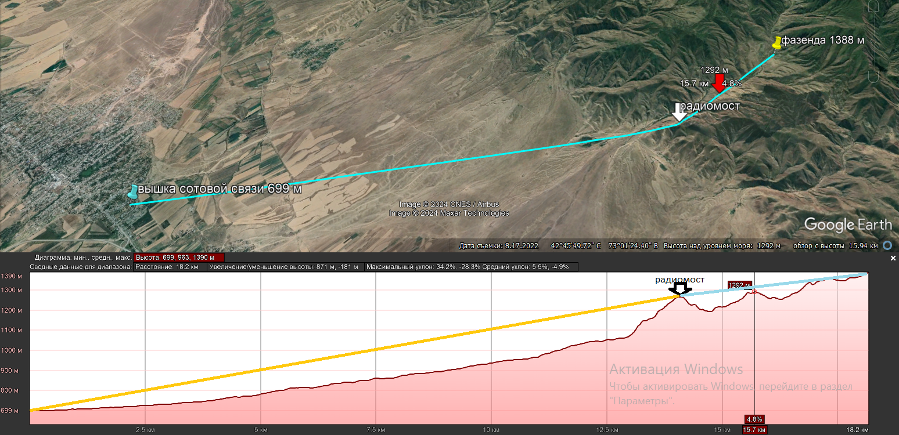

Это специально разработанное приложение предназначено для работы в составе радиомоста состоящего из трех+ радиостанций BAOFENG UV-82R и смартфона Samsung Galaxy A21s
Данный радимост позволяет организовать голосовую связь в местах в которых сотовая сеть полностью отсутствует, из-за естественных преград. Это могут быть ущелья гор, пески, и различные низины в которых нет прямой видимости на ближайщий населенный пункт в котором есть вышка сотовой связи. В конструкции этого радиомоста обычная носимая радиостанция выполняет функции телефона с кнопочным набором номера.
Скачать инструкцию по использованию для печати
Принцип работы двухканального репитера: при ВХОДЯЩЕМ ВЫЗОВЕ на время вызова запускается програмный DTMF анализ и включается вспышка смартфона которая посредством порогового датчика света, включает на передачу радиостанцию В (ПЕРЕДАЮЩАЯ) которая на частоте 433.075 мгц транслирует речевое сообщение о входящем вызове на радиостанцию А(АБОНЕНТСКАЯ) и если на радиостанции А (АБОНЕНТСКАЯ) нажать комбинацию PTT(B)+(*) то на частоте 159.775 мгц транслируется DTMF тон клавиши (*), который принимается радиостанцией С (ПРИЕМНАЯ) а затем подается на аудиовход смартфона, в котором с помошью данного приложения и алгоритма преобразования Фурье, распознается как команда принять входящий вызов. Нажатие комбинации PTT(B)+(#) пока трубка еще не поднята отклоняет вызов. Также принять входяший вызов можно комбинацией PTT(B)+(C) в этом случае аппаратный DTMF декодр "нажимает" центральную клавишу на гарнитуре смарфона. Повторное нажатие комбинации PTT(B)+(C) при поднятой трубке приведет к завершению вызова.
Для выполнения ИСХОДЯЩЕГО ВЫЗОВА на радиостанци А (АБОНЕНТСКАЯ) необходимо нажать комбинацию PTT(B)+(C), на частоте 159.775 мгц будет транслироваться DTMF тон клавищи (C), который принимается радиостанцией С (ПРИЕМНАЯ) и через аппаратный DTMF декодр "нажимает" центральную кнопку на гарнитуре смартфона, это действие приводит к запуску таймера и включению подсветки, благодаря которой рация В (ПЕРЕДАЮЩАЯ) включается на передачу. Затем при удерживании клавишы передачи PTT(B) и нажимания клавиш набора номера на частоте 159.775 мгц транслируются тона набираемых цифр, которые принимаются радиостанцией С (ПРИЕМНАЯ) и затем через разьем гарнитуры подаются на аудиовход смартфона, в котором с помошью данного приложения и алгоритма преобразования Фурье, распознаются и преобразуются в соответствующую цифру или символ. Затем цифры обьединяются в номер абонента, и по распознаванию символа (*) выполняется вызов. Нажатие комбинации PTT(B)+(C) отклоняет или завершает вызов. При этом нажатие комбинации PTT(B)+(#) служит для очистки поля набора номера.
ПЛЮСЫ РЕЖИМА: Наибольшее качество связи, отсутвие задержек в процессе беседы, полноценный прием, отклонение и завершение вызова
МИНУСЫ РЕЖИМА: Требуется две радиостанции, две антенны и DTMF декодер
Из-за низкой избирательности раций BAOFENG UV-82R невозможна работа в пределах одного диапазона, так как передающая радиостанция своим
полем полностью подавляет приемную из-за этого требуется использование двух диаппазонов и сильный разнос частот приема и передачи
(159.775мгц и 433.075мгц) соответсвенно на больших расстояниях из-за особеностей прохождения радиоволн появляется значительная разница
в дальности действия приемного и передающего канала. В любом случае потребуется разнос антенн для исключения взаимного влияния
Старт таймера и DTMF распознавания с помощью аппаратного DTMF декодера усложняет схему и увеличивает вероятность отказа всей системы
так как декодр подвержен влиянию вч-полей (требуется экранирование) и может плохо переносить сильные перепады температуры
При использование професиональных автомобильных радиостанций с высокой избирательностью и супергетеродинным приемником должна получится
работа в пределах одного диапазона соответсвенно на стороне абонента также может быть применена автомобильная радиостанция что позволит
увеличить дальность связи до 50-100 км по прямой видимости
ВНИМАНИЕ! Если смартфон не блокирует доступ к микрофону во время активной беседы то в настройках режима нужно включить Аппаратный DTMF
(без модуля) при этом DTMF анализ будет вестись непрерывно и во время активной беседы можно набрать номер или завершить вызов нажав # при
этом аппаратная часть репитера упрощается и необходимость в DTMF декодере отпадает также освобождается клавиша быстрого набора С и
завершение вызова становится более логичным уже не через декодр комбинацией PTT+C а просто PTT+#
Принципиальная схема устройства для режима Репитер 2 канальный:
Cкачать
схему двухканального репитера для sPlan 7.0
Устройсто двухканального репитера в сборе:
Принцип работы одноканального репитера: Изначально програмный DTMF анализ запущен и ведется непрерывно. При ВХОДЯЩЕМ ВЫЗОВЕ на время произнесения речевого сообщения о входящем вызове включается вспышка смартфона которая посредством порогового датчика света, включает на передачу РАДИОСТАНЦИЮ РЕПИТЕРА которая на любой выбранной частоте в данном случае на 434.075 мгц транслирует сообщение на РАДИОСТАНЦИЮ АБОНЕНТА. Переодически между сообщениями появляется временной промежуток (в этот промежуток вспышка отключается и радиостанция репитера снова встает в режим приема) позволяющий принять или отклонить вызов и если на РАДИОСТАНЦИИ АБОНЕНТА нажать комбинацию PTT(B)+(*) то на частоте 433.075 мгц транслируется DTMF тон клавиши (*), который принимается РАДИОСТАНЦИЕЙ РЕПИТЕРА а затем подается на аудиовход смартфона, в котором с помошью данного приложения и алгоритма преобразования Фурье, распознается как команда принять входящий вызов. Нажатие комбинации PTT(B)+(#) пока трубка еще не поднята отклоняет вызов. Также принять входяший вызов можно комбинацией PTT(B)+(C) в этом случае аппаратный DTMF декодр "нажимает" центральную клавишу на гарнитуре смарфона. Повторное нажатие комбинации PTT(B)+(C) при поднятой трубке приведет к завершению вызова.
Для выполнения ИСХОДЯЩЕГО ВЫЗОВА на радиостанци АБОНЕНТСКАЯ необходимо удерживая клавишу передачи PTT(B) нажимать сооответствующие клавишы набора номера при этом на частоте 433.075 мгц будут транслируются тона набираемых цифр, которые принимаются радиостанцией РАДИОСТАНЦИЕЙ РЕПИТЕРА и затем через разьем гарнитуры подаются на аудиовход смартфона, в котором с помошью данного приложения иалгоритма преобразования Фурье, распознаются и преобразуются в соответствующую цифру или символ. Затем цифры обьединяются в номер абонента, и по распознаванию символа (*) выполняется вызов. При этом нажатие комбинации PTT(B)+(#) служит для очистки поля набора номера. Нажатие комбинации PTT(B)+(C) при поднятой трубке приведет к завершению вызова. Во время беседы (а также при всех речевых сообщениях) в работу включается электронная VOX система которая на время разговора второго абонента с помощью порогового УНЧ и замыкания верхней клавищи гарнитуры (громкость вверх) включает вспыщку а та в свою очередь через пороговый датчик света включает РАДИОСТАНЦИЮ РЕПИТЕРА на передачу.
ПЛЮСЫ РЕЖИМА использование одной радиостанции и одной антенны, одинаковая дальность на прием и на передачу так как используется всего один канал связи
МИНУСЫ РЕЖИМА Спецефические неудобства в процессе разговора из-за програмной VOX системы создающей задержки в процессе разговора, требуется говорить по очереди
со значительными паузами чтобы VOX успевал включаться и отключаться (
необходимость использования аппаратного DTMF декодера если смартфон блокирует доступ к микрофону во время активной беседы
Режим из-за ограничений на доступ к аудиозахвату VOICE_DOWNLINK (голос абонента) на модели Galaxy A21S (номер модели SM-A217F/DSN) сделан не так как
бы хотелось (пришлось добавить пороговый уситель как часть VOX системы что скорее всего будет приводить к задержкам в срабатывании).
Все звуковые команды, в том числе сам звонок, голосовые сообщения о балансе сигналы вызова, сообщения о недоступности абонента сопровождаются четким
включение и отключением вспышки. Трудность представляет управление вспышкой по голосу абонента так как доступ к VOICE_DOWNLINK (аудиовыходу то есть к
голосу абонента) заблокирован в самой системе андроид начиная с 6 версии. Если бы удалось получить доступ к к VOICE_DOWNLINK это бы решило проблемму програмной VOX системы но
не позволило отказаться от аппаратного DTMF декодера Еще одним вариантом может быть использование смартфона с прошивкой позволяющей
получить доступ к VOICE_DOWNLINK
Выходом из ситуации (это должно решить проблему быстродействия) может быть использовании второго смартфона
который также будет работать на вспышку и задачей которого будет только включать вспышку по наличии звука на аудиовыходе основного смартфона
Статья по теме: Запись звонков Описаный подход с получением
специальных разрешений не заработал на Galaxy A21S
Для проверки позвоните на телефон поднимите трубку и пусть звонящий скажет что то в свою трубку
если вспышка будет загораться от его голоса значит VOX система работает и аудиозахват VOICE_DOWNLINK (голос абонента) выполняется
Выбор смартфона именно для этого режима нужно производить при активном вызове вспышка должна включаться только от голоса абонента но не в коем случае от своего
голоса иначе это приведет к включению вспышки и от собственного голоса и от голоса абонента, эта модель TELE2_URBAN_SA_29112017-1917 версия ядра 3.18.35 версия андроид 7.0
случайным образом заработала как надо и это независимо от того какой источник звука выбран MIC или VOICE_COMMUNICATION так как во время активного вызова то есть во
время текущей беседы источником звука именнно на этой модели становится VOICE_DOWNLINK (голос абонента) и в рамке спектрометра график появляется только если говорит абонент
Еще одним вариантом можно попробовать установить приложение как системное но для этого необходимы рут права
Принципиальная схема устройства для режима Репитер 1 канальный:
Cкачать
схему одноканального репитера для sPlan 7.0
Описание и назначение опций главного экрана:
Расстояние на которое работает данное устройство складывается из двух расстояний: ПЕРВОЕ это растояние от точки базовой станции до места увереного приема сотовой сети и на этом месте устанавливается радиомост, обычно это возвышенность с которой есть прямая видимость на вышку сотовой связи и есть более меннее прямая видимость на то место которое необходимо обеспечить связью и ВТОРОГО расстояния: зоны действия радиостанций работающих на разнесенных частотах. По этой причине репитер имеет две антенны.
Этот радиомост разрабатывался для фазенды расположенной в горном ущелье, схема приведена на карте: с помощью приложения Google Еarth и ее функции показать профиль рельефа, можно видеть что прямая видимость перегорожена выступающей горой
Схема расположения на местности: можно видеть что с места где расположен радиомост есть прямая видимость как на вышку так и на фазенду
Методика расчета и выбора точки установки репитера с помощью приложения Планета Земля:
1 протягивается линия от точки уверенного приема сотовой сети (назовем ее А) до точки которое необходимо обеспечить связью (назовем ее С) (сохраняем)
2 нажимая на эту линию в левом окне правой кнопкой мыши выбираем пункт "Показать профиль рельефа"
3 смотрим что именно загораживает прямую видимость, допустим это гора или выступающий холм (замечаем это место назовем точка В)
4 не закрывая окно с профилем рельефа нажимаем правой кнопкой мыши на линии м выбираем "Свойства"
(теперь один из концов линии (там где С) мы можем перемещать одновременно просматривая как меняется профиль рельефа)
5 уставливаем конец линии в точку "В" (точка перегиба) и продолжаем тянуть линию до точки (С) (устанавливаем)
6 Возвращаемся к точке B и перемещаем ее в наиболее выгодное место смотря на график "Профиль рельефа"
(Чтобы с точки В была прямая видимость на точку А и точку С а график перегиба был по возможности острее)
7 в этой точке В устанавливается репитер (также учиваются условия доступности например в зимнее время)
Выбор подходящего смартфона: версия андроид системы должна быть не ниже 6.0. желательно использовать более старые оригинальные неубиваемые смартфоны. Обязательно должна быть работоспособная вспышка. Разьем гарнитуры должен быть абсолютно исправен: В конструкции использовалась трехкнопочная гарнитура с центральной клавишей, клавишей + и клавишей -. При исправности гарнитуры и разьема и нажимании соответствующих клавиш поле иконки гарнитуры окрашивается в следующие цвета. - синим + красным и центральная зеленым. Тест смартфона заключается в подключении гарнитуры и нажатии на ней центральной кнопки при этом иконка гарнитуры должна окраситься в зеленый цвет а иконка вспышки в красный а сама вспышка должна включится на время таймера.
Настройки радиостанций
Baofeng ub82r для режима репитер двухканальный: ключевые настройки выделены красным
цветом
Скачать
руководство
пользователя
Скачать
схему
радиостанции
Радиостанция А (АБОНЕНТСКАЯ) работает в двухканальном режиме (1 канал 433.075мгц 2 канал 159.775мгц) так как она принимает звук с радиостанции С и передает звук а также DTMF тональности на радиостанцию В
ее настройки: (0) SQL 5 (1) STEP 2.5K (2) TXP HIGT (3) SAVE OFF (4) VOX OFF (5) WN WIDE (6) ABR 10 (7) TDR ON (8) BEEP ON (9) TOT 600 (10) R-DCS OFF (11) R-CTCS 123.0Hz (12) T-DCS OFF (13) T-CTCS 123.0Hz (14) VOICE OFF (15) ANI-ID 80808 (16) DTMFST DT-ST (17) S-CODE 1 (18) SC-REV TO (19) PTT-ID OFF (20) PTT-LT 5 (21) MDF-A FREQ (22) MDF-B FREQ (23) BCL OFF (24) AUTOLK OFF (25) SFT-D OFF (26) OFFSET 000.000 (27) MEM-CH CH-001 (433.075мгц) MEM-CH CH-002 (159.775мгц) (28) DEL-CH CH-002 (29) WT-LED PURPLE (30) RX-LED BLUE (31) TX-LED ORANGE (32) AL-MOD TONE (33) BAND VFN (34) TDR-AB OFF (35) STE ON (36) PR-STE 5 (37) PRT-RL OFF (38) PONMGS FULL (39) ROGER OFF (40) RESET ALL (41) R-TONE 1750hz
Радиостанция В (ПЕРЕДАЮЩАЯ) работает в однокональном режиме (канал 1 частота 433.075мгц) она включается на передачу от подсветки или вспышки смартфона при входящем вызове а также при поступлении на смартфон DTMF команд (частота 433.075 выбрана так как она лучше работает в горной местности и даже если абонент находится далеко от фазенды он хотя бы сможет услышать что ему звонят)
ее настройки: (0) SQL 5 (1) STEP 2.5K (2) TXP HIGT (3) SAVE OFF (4) VOX OFF (5) WN WIDE (6) ABR 10 (7) TDR ON (8) BEEP ON (9) TOT 600 (10) R-DCS OFF (11) R-CTCS 123.0Hz (12) T-DCS OFF (13) T-CTCS 123.0Hz (14) VOICE OFF (15) ANI-ID 80808 (16) DTMFST OFF (17) S-CODE 1 (18) SC-REV TO (19) PTT-ID OFF (20) PTT-LT 5 (21) MDF-A FREQ (22) MDF-B FREQ (23) BCL OFF (24) AUTOLK OFF (25) SFT-D OFF (26) OFFSET 000.000 (27) MEM-CH CH-001 (433.075мгц) (28) DEL-CH CH-002 (29) WT-LED PURPLE (30) RX-LED BLUE (31) TX-LED ORANGE (32) AL-MOD TONE (33) BAND VFN (34) TDR-AB OFF (35) STE ON (36) PR-STE 5 (37) PRT-RL OFF (38) PONMGS FULL (39) ROGER OFF (40) RESET ALL (41) R-TONE 1750hz
Радиостанция С (ПРИЕМНАЯ) работает в одноканальном режиме (канал 2 частота 159.775мгц) она постоянно находится в режиме приема и ожидает DTMF команды ее настройки: (0) SQL 5 (1) STEP 2.5K (2) TXP HIGT (3) SAVE OFF (4) VOX OFF (5) WN WIDE (6) ABR 10 (7) TDR ON (8) BEEP ON (9) TOT 600 (10) R-DCS OFF (11) R-CTCS 123.0Hz (12) T-DCS OFF (13) T-CTCS 123.0Hz (14) VOICE OFF (15) ANI-ID 80808 (16) DTMFST OFF (17) S-CODE 1 (18) SC-REV TO (19) PTT-ID OFF (20) PTT-LT 5 (21) MDF-A FREQ (22) MDF-B FREQ (23) BCL OFF (24) AUTOLK OFF (25) SFT-D OFF (26) OFFSET 000.000 (27) MEM-CH CH-002 (159.775мгц) (28) DEL-CH CH-002 (29) WT-LED PURPLE (30) RX-LED BLUE (31) TX-LED ORANGE (32) AL-MOD TONE (33) BAND VFN (34) TDR-AB OFF (35) STE ON (36) PR-STE 5 (37) PRT-RL OFF (38) PONMGS FULL (39) ROGER OFF (40) RESET ALL (41) R-TONE 1750hz
Вимание! При закрытие каналов субтонами возможно искажение DTMF команд, субтона закрывают канал от прослушивания но могут делаеть DTMF срабатывание менее устойчивым, если это становится критично то лучше выбирать субтона более высокой частоты, либо оставить каналы открытыми.
Коды удаленного управления с радиостанции:
0(*) Пропущенный вызов
1(*) Состояние акамулятора
2(*) Текущее время и дата
3(*) Уровень сети последней активной СИМ
4(*) Перезагрузка радиомодуля
5(*) Будильник
6(*) Барометр
7(*) Голосовые команды
8(*) Очистить номера быстрого набора
9(*) Озвучивание on/off
При исходящем звонке после нажатия (*):
1 выполнить вызов с первой сим карты
2 выполнить вызов со второй сим карты
Режим СУПЕРТЕЛЕФОН: предназначен для оперативного развертывания связи, например при ЧС: Для этого необходим минимум оборудования: один смартфон, одна радиостанция и специальный аудиокабель, (подключение кабеля определится автоматически) можно обойтись и без кабеля при этом достаточно закрепить смартфон на радиостанции, соорентировав динамик смартфона к микрофону радиостанции. Во время этого режима смартфон и радиостанция будут работать от собственных батареек, в приложении будет вестись непрерывный dtmf анализ, вспышка и экран будут отключены, динамик при вызове автоматически включен, а рация будет ставится на передачу от системы VOX (VOX должна работать очень стабильно и качественно иначе это отразится на качестве слышимости). Для Запуска/Остановки режима нужно нажать на иконку гарнитуры. При удержания комбинации PTT+F (41 пункт в настройках рации выставлен на 1750гц и в настройках приложения включена "Сигнальная вспышка") включится вспышка что может быть полезно для обнаружения устройства в ночное время. Ограничения накладываемые этим режимом: Прием входящего вызова спецефический: средствами ТТС произносится имя звонящего и предложение принять или отклонить вызов затем наступает тишина, в течении которой нужно нажать * или #. Сообщение ТТС будет повторятся до тех пор, пока вызов не будет принят или отклонен, или звонящий не положит трубку. Собеседники должны говорить по очереди и не торопясь, делая значительные паузы чтобы VOX радиостанции успевал включаться и отключаться. Требуется подбор уровня громкости радиостанции чтобы не перегружать микрофон смартфона (громкость аудио смартфона можно регулировать комбинациями PTT+А добавление и PTT+B уменьшение). Со стороны рации когда соеденение установлено не возможно положить трубку так как микрофон смартфона занят и дтмф анализ отключается (но если смарфон поддерживает доступ к VOICE_DOWNLINK (голос абонента) то тогда трубку можно положить комбинацией PTT+#) Работа режима будет сильно зависеть от работы VOX системы радиостанции, режим не способен обеспечить качественную связь но связаться и обменятся необходимыми данными возможно худо бедно но связь возможна
Если планируется использовать на стороне удаленного абонента больше одной радиостанции, например нужно обеспечить связью несколько фазенд находящихся на удалении друг от друга. Для этого потребуется на всех радиостанциях лишь настроить частоты каналов, при этом каждый сможет звонить в сотовую сеть, но минусом данного подхода является то, что все будут слышать друг друга, и у всех будет возможность конференц связи друг с другом (этот подход может быть хорош при коллективных походах в горы когда такой режим становится желательным). Для селективного вызова каждой отдельной радиостанции потребуется доработать схему самого репитера и соответсвенно доработать приложение
Вимание! При работе данного приложения в режиме "Репитер (2 Канала)" экран принудительно удерживается постоянно включенным, это необходимо для отслеживания нажатия центральной кнопки гарнитуры, поэтому, для экономии установите минимальную яркость. В режиме "Супертелефон" экран отключится по системным настройкам таймаута экрана
zip архив с исходным кодом приложения
Скачать
исходный код для Android Studio